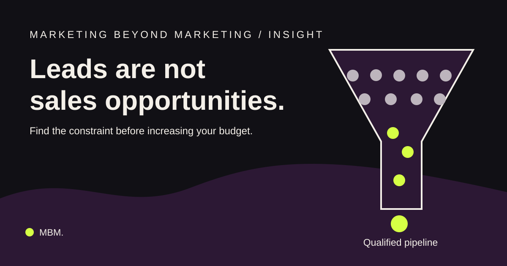

B2B demand generation / Marketing operations
Why Your B2B Marketing Generates Leads but Not Sales Opportunities

Your marketing dashboard may show rising lead numbers while qualified sales opportunities remain flat. Here is how to diagnose why.
Your marketing dashboard shows growth. Your sales pipeline tells a different story.
Campaigns are generating enquiries. Website traffic is increasing. Cost per lead looks reasonable. Yet the sales team says the leads are not becoming meaningful opportunities. The answer is not necessarily more advertising. Generating a lead and creating a sales opportunity are different business outcomes.
Why B2B leads fail to convert
Five problems repeatedly deserve investigation: enquiries from companies outside the ideal customer profile; content that attracts interest but not buying intent; inconsistent qualification criteria; weak sales handoffs; and campaign reporting centred on lead volume rather than pipeline. The challenge is determining which constraint affects your business.
1. Your campaigns reach the wrong companies
A campaign can generate inexpensive enquiries from businesses that cannot realistically buy. Define an ideal customer profile using the buyer’s problem, organisational complexity, purchasing capacity, likely buying triggers and buying process. Examine what proportion of each campaign’s leads matches that profile.
2. Content generates attention, not buying intent
A report download, webinar registration and demonstration request are not equivalent signals. Educational content can build awareness and trust without implying immediate purchase readiness. Separate engagement from evidence of a relevant business problem and explicit commercial interest.
3. Marketing and sales define quality differently
Marketing may qualify a lead using job title, company size and engagement. Sales may require a clear use case and a credible buying process. Agree on acceptance criteria, follow-up ownership and structured rejection reasons. “Poor lead” is not an actionable diagnosis; “outside target account size” is.
4. Good enquiries disappear during handoff
Relevant prospects can be lost through slow routing, missing context and unclear responsibility. Track time of enquiry, lead assignment, first meaningful response and the recorded next step. Fix operational gaps before assuming that acquisition is broken.
5. You optimise cost per lead instead of opportunities
Suppose two campaigns each cost ₹50,000. Campaign A produces 200 leads and four qualified opportunities; Campaign B produces 80 leads and twelve opportunities. Their costs per lead are ₹250 and ₹625 respectively, but their costs per opportunity are ₹12,500 and approximately ₹4,167. This hypothetical example shows why lead costs alone can mislead. Opportunity size, win rate and revenue still matter.
How to diagnose your lead-to-opportunity problem
First agree on funnel definitions. Then calculate conversion between stages across consistent cohorts, allowing for your normal sales cycle. Segment by source and ideal-customer fit. Review rejection reasons, identify the largest addressable commercial constraint, test a specific improvement and measure whether comparable cohorts progress further.
What leadership should expect from a marketing report
A report should answer whether marketing is reaching relevant accounts, how many enquiries meet agreed criteria, where progression stalls, which channels contribute to opportunities and where attribution is uncertain. Marketing influence is not automatically proof of revenue causation.
Fix the constraint before increasing the budget
More leads help when the business can convert relevant demand. If the wrong companies respond, improve targeting. If prospects are interested but not ready, improve qualification and nurturing. If good enquiries disappear after submission, improve the handoff. Diagnose the full journey before increasing spend.
Frequently asked questions
What is a good B2B lead-to-opportunity conversion rate?
There is no universal benchmark. Industry, lead source, sales cycle and qualification rules matter. Compare internally consistent cohorts before applying outside averages.
Why do B2B leads fail to convert?
Common causes include poor account fit, limited buying intent, unclear qualification standards, ineffective follow-up and mismatched marketing and sales expectations.
How do you measure B2B lead quality?
Review ideal-customer fit, sales acceptance, opportunities generated, pipeline progression and eventually commercial outcomes.
What is the difference between MQL and SQL?
An MQL meets the organisation’s marketing qualification criteria. An SQL meets agreed criteria for active sales pursuit. Definitions must be shared between teams.
Should marketers optimise for cost per lead or cost per opportunity?
Track both, but evaluate investment alongside opportunity quality, win rates, revenue and customer economics.
Illustrative calculations are hypothetical. No industry-wide conversion rate is claimed. Read more about MBM services or browse Thinking.